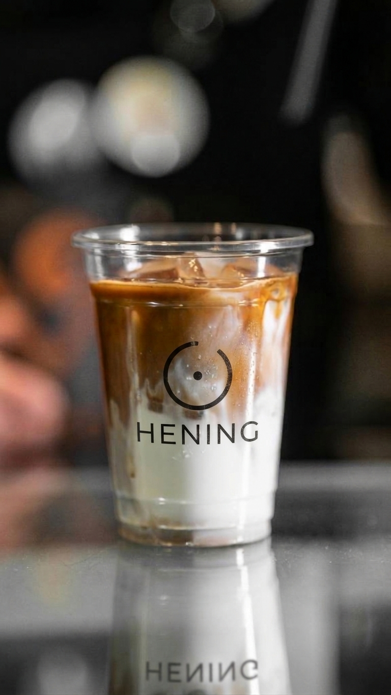
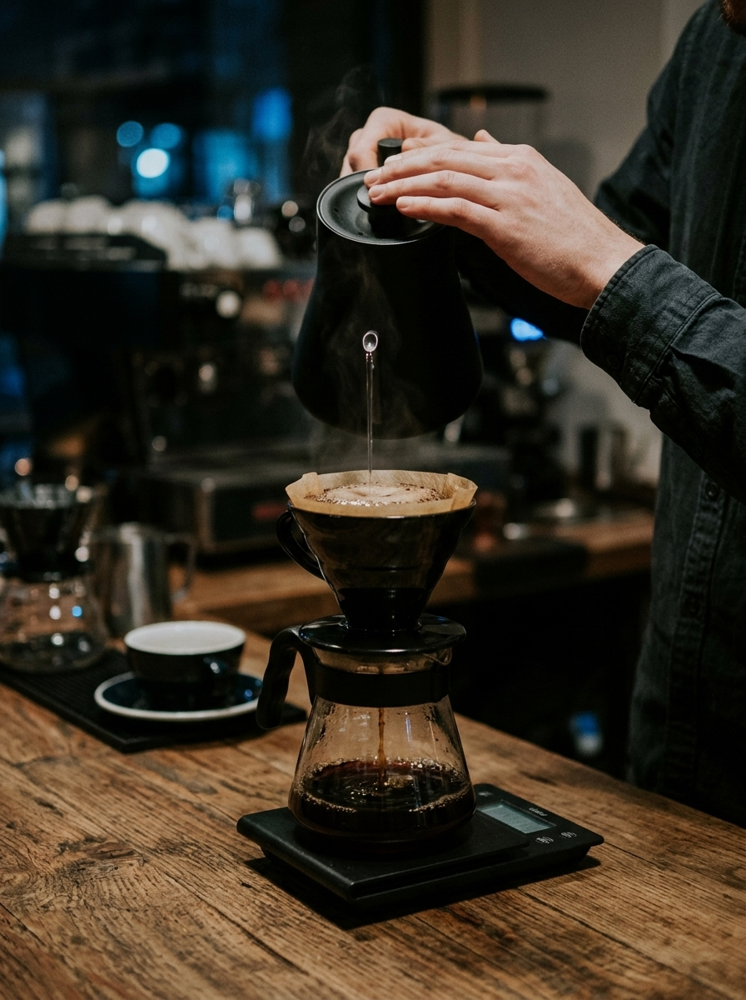
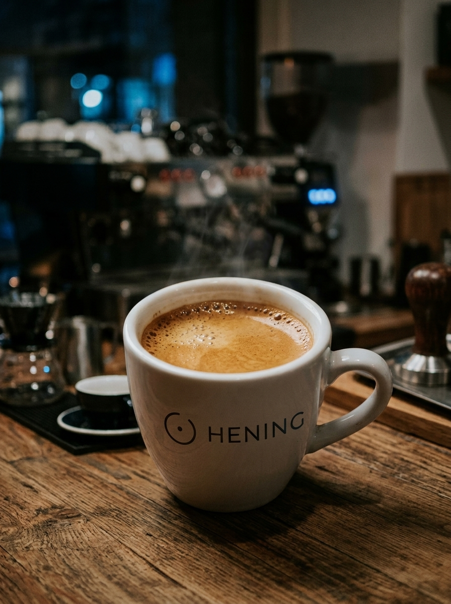
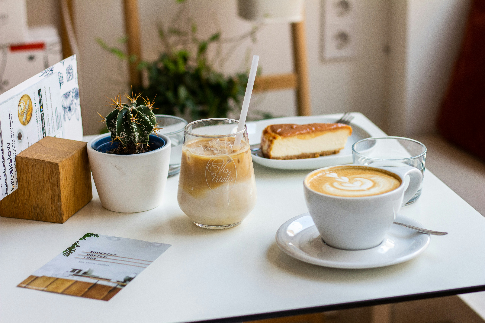
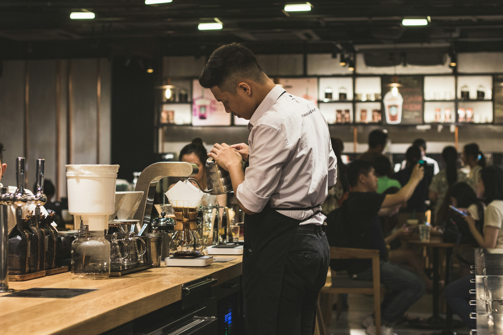
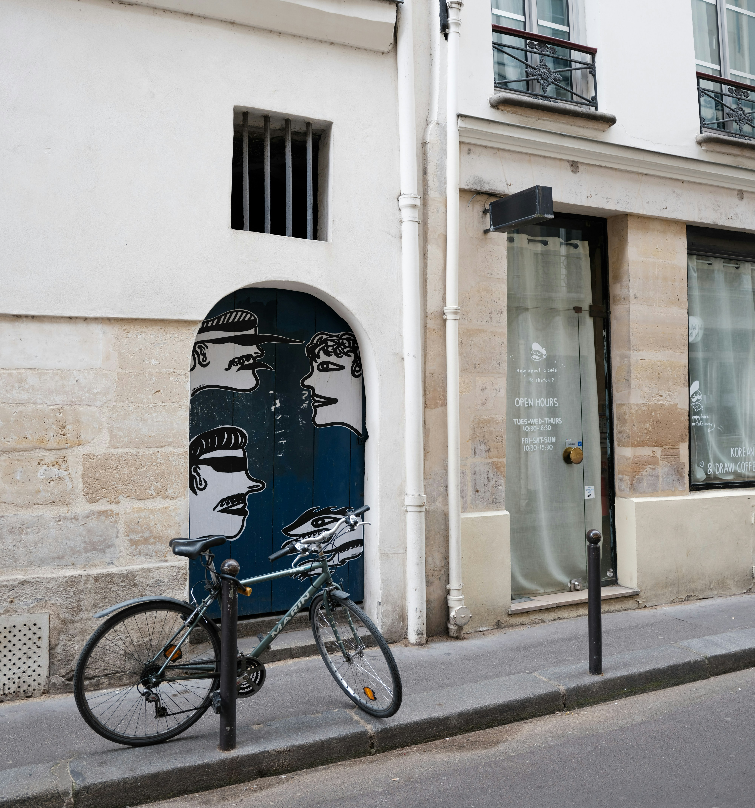

Kopi Susu Hening 27.000
Espresso, susu segar, dan gula kelapa. Manisnya tipis.

Kedai kopi specialty di Cihapit. Kami menyangrai sendiri setiap Kamis dan menyeduh satu cangkir pada satu waktu.
Hening Kopi dibuka tahun 2021 oleh Laras dan Bima, dua teman kuliah yang ingin punya tempat minum kopi yang tidak berisik. Kedainya muat sekitar dua puluh empat orang, dan kami sengaja tidak menambah kursi.
Biji kami beli langsung dari petani di Pangalengan, Toraja, dan Ijen. Setiap Kamis kami sangrai sendiri dalam batch kecil di belakang bar.


Hanya ada satu mesin espresso, jadi kopi dibuat satu per satu.Hening Kopi, Cihapit
Tumbuh di 800-2.000 mdpl. Rasa lebih kompleks, asam lebih terasa, kafein lebih rendah. Semua biji kami Arabica.
Tumbuh di dataran lebih rendah. Body tebal, pahit, kafein hampir dua kali Arabica. Umum untuk kopi sachet dan campuran espresso.
Asam cerah, aroma buah dan bunga.
Seimbang, manis karamel dan cokelat.
Pahit tebal, ada rasa gosong ringan, permukaan biji berminyak.

Bertekanan, 25-30 detik, pekat dan singkat.
Tuang manual, bersih dan terang.
Rendam dingin 18 jam, halus dan manis.
Makin banyak susu, makin lembut rasanya.
Tidak banyak pilihan, tapi semuanya kami suka.

Espresso, susu segar, dan gula kelapa. Manisnya tipis.

Notes teh hitam dan jeruk. Berganti biji tiap beberapa pekan.

Teh panggang Jepang dengan susu. Tanpa kopi, aman untuk sore hari.
Harga dalam rupiah. Susu oat tambah 5.000.



Resep yang kami pakai tiap hari. Silakan coba di rumah.
Barista kami menyeduh satu cangkir pada satu waktu. Kalau pesananmu agak lama, itu bukan lupa, itu memang begitu caranya.
Disangrai Kamis, siap diambil Jumat pagi.
| Asal | Ketinggian | Proses | Rasa | 200 g |
|---|---|---|---|---|
| Pangalengan, Jawa Barat | 1.400 mdpl | Fully washed | Teh hitam, jeruk, manis bersih | 95.000 |
| Toraja Sapan, Sulawesi Selatan | 1.600 mdpl | Washed | Rempah, cokelat, body tebal | 108.000 |
| Ijen, Jawa Timur | 1.300 mdpl | Natural | Buah gelap, kakao, manis panjang | 102.000 |
Datang untuk kerja satu jam, ternyata betah sampai sore.
V60-nya bersih. Biji Toraja yang saya bawa pulang habis dalam dua minggu.
Tempatnya tenang, kopi susunya tidak terlalu manis.

...